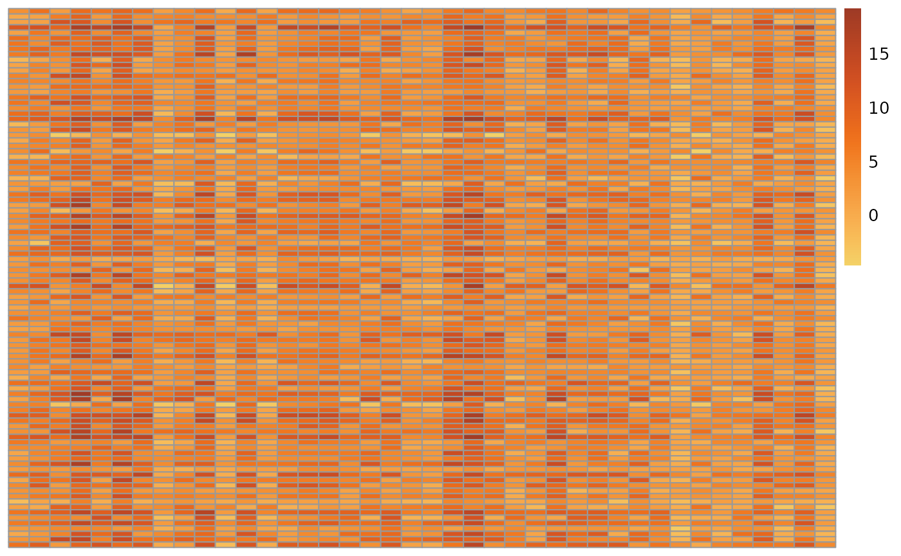
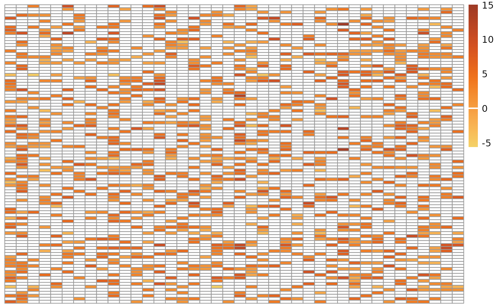
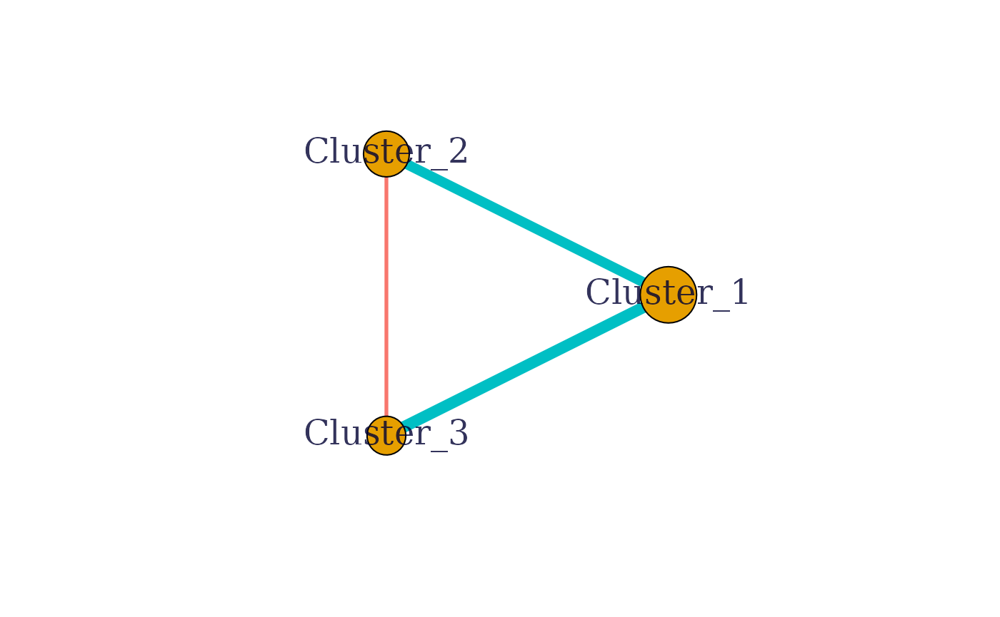
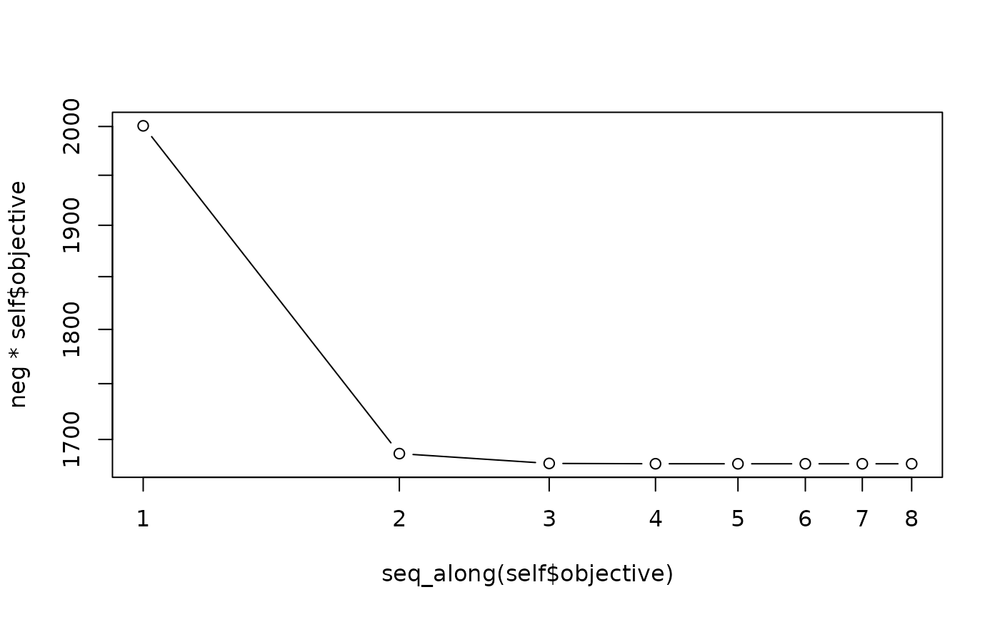
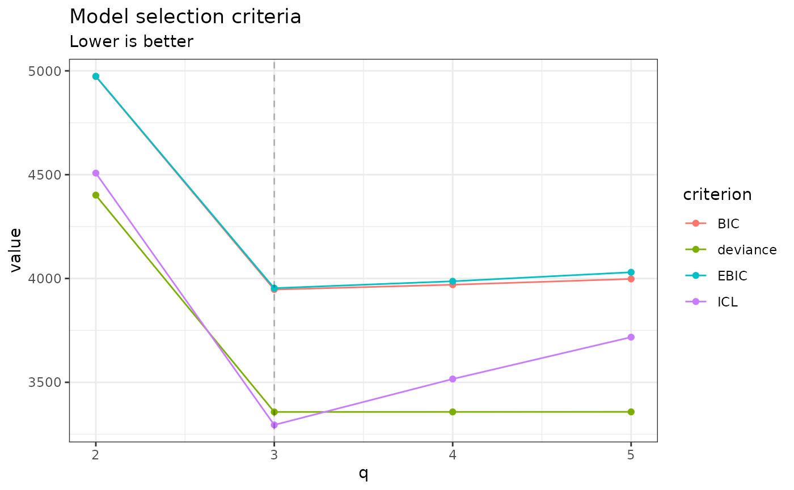
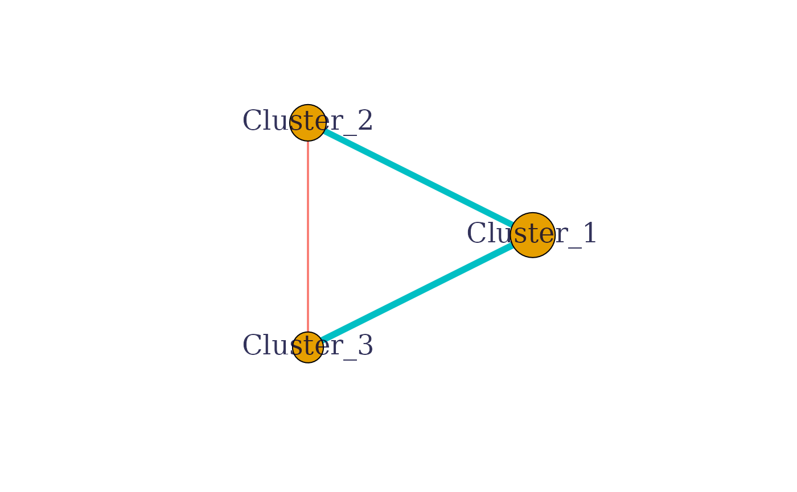
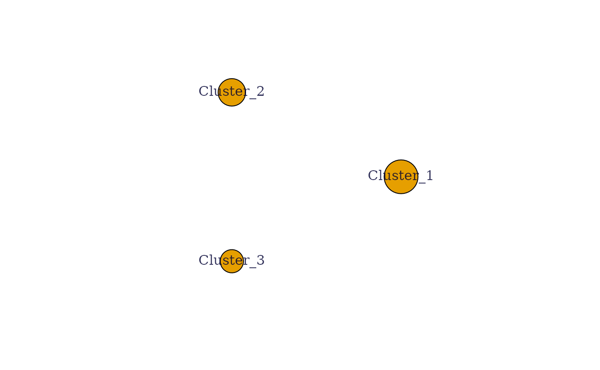
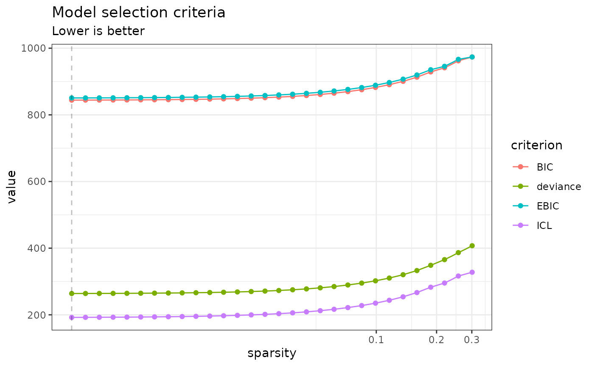
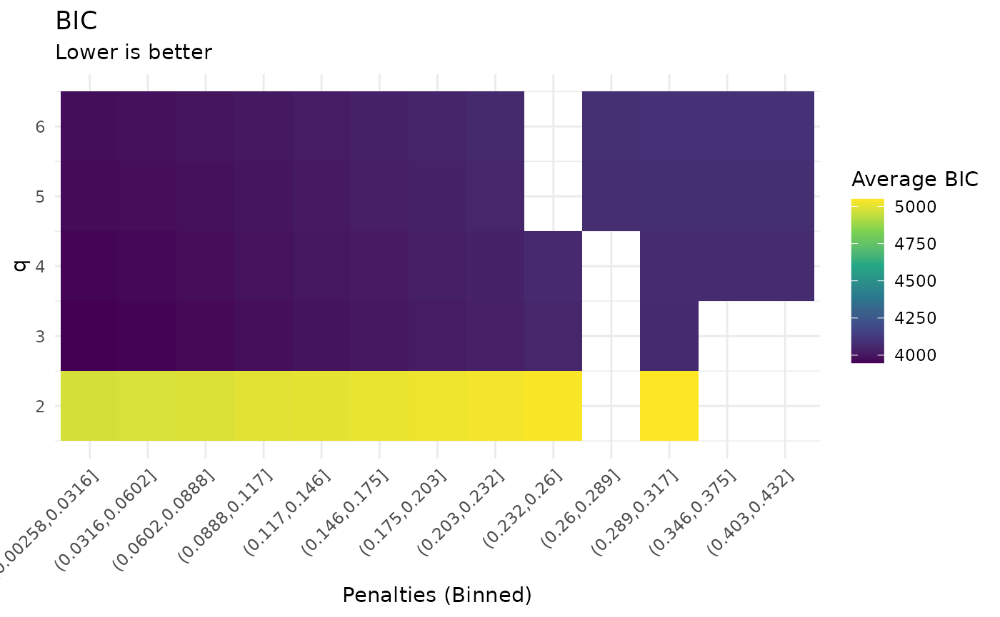

Analyzing multivariate Gaussian data with the Normal-Block model - First steps
Jeanne Tous, Julien Chiquet
2026-06-25
Source:vignettes/normal-block.Rmd
normal-block.RmdPreliminaries
This vignette illustrates the use of the normal-block function and the methods accompanying the R6 normal-block classes.
From a statistical point of view, the function normal-block adjusts a multivariate Normal-Block model (Gaussian graphical model with a latent clustering structure) to a table of observations, possibly after correcting for the effects of covariates. Depending on the parameters given, the function uses the clustering that is given or infers one, integrates zero-inflation or not, infers a sparse network or not… The parameters inference can either be done with an integrated variational Expectation-Maximization approach (recommended) or with a heuristic approach.
Theoretical explanations for this model can be found in the pre-print “An integrated method for clustering and association network inference” (Chiquet et al., 2024).
Requirements
library(normalblockr)
library(pheatmap)
library(paletteer)Data simulation
We illustrate the analysis with two simulated datasets.
Fix the seed to make the results reproducible.
set.seed(1)Simulate data with generate_normal_block_data.
Fix simulation parameters
Several parameters need to be defined to simulate the data:
n = 100 # Number of samples (number of rows in the matrix of observations)
p = 40 # Number of entities observed (number of columns in the matrix of observations)
d = 2 # Number of covariates
Q = 3 # Number of clusters
kappa = 0 # Mean zero-inflation probability (can also be a vector to define one ZI-probability for each variable). kappa = 0 means that there is no zero-inflation.
omega_structure = "erdos-renyi" # Network structure.
u_v = c(0.3, 0.1) # Parameters to generate an association matrix from a graph, details given in the bibliography.
SNR = 0.75 # Signal to Noise Ratio, defines the relative weight of the covariates and the variance
alpha = rep(1/Q, Q) # Vector giving probabilities of belonging to each cluster
range_X = c(0, 10) # Min and max values for the covariates
range_D = c(0.5, 1.5) # Min and max values for the individual entities variances Simulation 1 (no zero-inflation)
generate_normal_block_data generates data under the Normal-Block model. It returns a list that contains the simulated covariates and observations , the simulation parameters (including the clustering ).
my_nb_data <- generate_normal_block_data(n, p, d, Q, kappa, omega_structure, u_v,
SNR, alpha, range_X, range_D)
pheatmap::pheatmap(my_nb_data$Y,
color =paletteer::paletteer_c("ggthemes::Orange-Gold", n = 100), cluster_rows = FALSE, cluster_cols = FALSE, show_rownames = FALSE)
Simulation 2 (with zero-inflation)
To generate zero-inflated data, we set-up kappa as a vector of zero-inflation probabilities. One needs to ensure that these values are between 0 and 1.
kappa_zi <- rnorm(p, mean = 0.7, sd = 0.05)
kappa_zi <- unlist(lapply(kappa_zi, f <- function(x) return(max(0, min(x, 0.9)))))
my_nb_data_zi <- generate_normal_block_data(n, p, d, q = 5, kappa_zi, omega_structure,
u_v, SNR, alpha, range_X, range_D)For a better visualization of the zero-inflated data, we set-up the 0 to be shown in white.
min_val <- min(my_nb_data_zi$Y) ; max_val <- max(my_nb_data_zi$Y)
orange_gold_pal <- paletteer::paletteer_c("ggthemes::Orange-Gold", n = 100)
n_breaks <- 100
zero_pos <- round((0 - min_val) / (max_val - min_val) * n_breaks) + 1
custom_pal <- c(orange_gold_pal[1:(zero_pos - 1)], "white", orange_gold_pal[zero_pos:n_breaks])
pheatmap::pheatmap(my_nb_data_zi$Y,
color = custom_pal,
cluster_rows = FALSE, cluster_cols = FALSE,
show_rownames = FALSE)
Prepare the data for a normal-block analysis
A specific data object of class NormalBlockData needs to be created to analyse the data with normalblockr.
One can either use Y and X only to generate the NormalBlockData object.
my_data <- NormalBlockData$new(my_nb_data$Y, my_nb_data$X)
my_data_zi <- NormalBlockData$new(my_nb_data_zi$Y, my_nb_data_zi$X)Alternatively, if one only wants to include some of the covariates contained in X, a formula can be used to specify which one:
colnames(my_data$X) <- c("X1", "X2")
my_data_alt <- NormalBlockData$new(my_data$Y, my_data$X, formula = ~ 0 + X1)Run a normal-block analysis
All normal-block analyses can be run with the normal_block function. The function is called with different parametrisations depending on whether the clustering or the number of clusters is known or not, and according to the requested level of sparsity, among other factors. Details about this can be found in the function’s documentation.
By default, the parameters are inferred using a variational Expectation Maximization approach with 100 iterations. A finer control of the optimization is possible with the control parameter of normal_block that must be a list generated by the NB_control function.
With non-zero-inflated data
Fixed clustering
When the variables’ clustering is known, one can directly give them as an input to the normal_block function.
my_NB <- normal_block(data = my_data,
blocks = my_nb_data$parameters$C)
#> Fitting a diagonal normal-block model with fixed blocks
#>
#> DONEThe model convergence can be checked with plot.
plot(my_NB)A summary of the results is accessible via print.
print(my_NB)
#> A diagonal normal-block model with fixed blocks .
#> ===========================================================================
#> nb_param q n_edges sparsity loglik deviance BIC ICL EBIC niter
#> 126 3 3 0 -131.637 263.274 843.526 191.356 850.117 15
#> ===========================================================================
#> * Useful fields
#> $model_par, $posterior_par / $var_par, $clustering
#> $loglik, $BIC, $ICL, $objective, $nb_param, $criteria
#> * Useful S3 methods
#> print(), coef(), sigma(), fitted(), predict()The inter-clusters association network can be visualized with the plot_network function.
my_NB$plot_network()
#> Warning: vertex attribute frame.color contains NAs. Replacing with
#> default value black
Fixed number of clusters
When the variables’ clustering is unknown, one can simply fix the number of clusters in the blocks parameter.
my_NB <- normal_block(data = my_data,
blocks = 3)
#> Fitting a diagonal normal-block model with 3 unknown blocks
#>
#> DONE
print(my_NB)
#> A diagonal normal-block model with 3 unknown blocks .
#> ===========================================================================
#> nb_param q n_edges sparsity loglik deviance BIC ICL EBIC
#> 128 3 3 0 -1678.676 3357.351 3946.813 3294.745 3953.405
#> niter
#> 8
#> ===========================================================================
#> * Useful fields
#> $model_par, $posterior_par / $var_par, $clustering
#> $loglik, $BIC, $ICL, $objective, $nb_param, $criteria
#> * Useful S3 methods
#> print(), coef(), sigma(), fitted(), predict()
plot(my_NB)
The clustering inferred by the normal_block function can be compared with the real clustering if it is known.Unknown number of clusters
When the number of clusters is unknown, one can give the normal_block function a range of possible numbers and get a collection of Normal-Block models, one per number of clusters.
my_NB_unknown <- normal_block(data = my_data,
blocks = 2:5)
#> Fitting a diagonal normal-block model with unknown q
#> number of blocks = 2 number of blocks = 3 number of blocks = 4 number of blocks = 5
#> DONEmy_NB_unknown is a collection of Normal-Block models. It is possible to select a specific one either by picking a number of clusters or by selecting the best model for a given criterion (BIC, deviance, EBIC, ICL). The values for these criteria for each model can be seen with the plot function.
plot(my_NB_unknown)
The model selection is done with get_model when a specific number of clusters is required and with get_best_model to select the best model for a given criterion.
myNB_3 <- my_NB_unknown$get_model(3)
myNB_BIC <- my_NB_unknown$get_best_model("BIC")Playing with sparsity
By default, no penalty is applied on the association network. One can add a penalty by using the sparsity parameter of the normal_block function. This can be done with any of the above parametrisation (fixed clustering, fixed number of clusters, unknown number of clusters). Let us show an example with a fixed clustering.
If one wants to use a fixed penalty (see Tous & Chiquet, 2024) on the network, that value should be given in the sparsity parameter.
my_NB_sparse_low <- normal_block(data = my_data,
blocks = my_nb_data$parameters$C,
sparsity = 0.1)
#> Fitting a diagonal normal-block model with fixed blocks
#>
#> DONE
my_NB_sparse_high <- normal_block(data = my_data,
blocks = my_nb_data$parameters$C,
sparsity = 10)
#> Fitting a diagonal normal-block model with fixed blocks
#>
#> DONEThe bigger the penalty, the sparser the network.
my_NB_sparse_low$plot_network()
#> Warning: vertex attribute frame.color contains NAs. Replacing with
#> default value black
my_NB_sparse_high$plot_network()
#> Warning: vertex attribute label.cex contains NAs. Replacing with default
#> value 1
#> Warning: vertex attribute frame.color contains NAs. Replacing with
#> default value black
It is usually hard to know a priori what would be the best sparsity penalty. One can allow the normal_block function to explore different sparsity levels by simply setting sparsity = TRUE. The normal_block function then creates a collection of Normal-Block models, one per sparsity penalty.
my_NB_sparse <- normal_block(data = my_data,
blocks = my_nb_data$parameters$C,
sparsity = TRUE)
#> Fitting a Collection of diagonal normal-block models with fixed blocks, with different sparsity penalties.
#> penalty = 0.3011452 penalty = 0.2569274 penalty = 0.2192022 penalty = 0.1870163 penalty = 0.1595563 penalty = 0.1361283 penalty = 0.1161403 penalty = 0.09908715 penalty = 0.08453797 penalty = 0.07212508 penalty = 0.0615348 penalty = 0.05249951 penalty = 0.04479089 penalty = 0.03821415 penalty = 0.03260309 penalty = 0.0278159 penalty = 0.02373164 penalty = 0.02024707 penalty = 0.01727415 penalty = 0.01473775 penalty = 0.01257377 penalty = 0.01072754 penalty = 0.009152391 penalty = 0.007808526 penalty = 0.006661983 penalty = 0.00568379 penalty = 0.004849227 penalty = 0.004137204 penalty = 0.00352973 penalty = 0.003011452
#> DONEThe different criteria can then be plotted as a function of the penalty, using plot.
plot(my_NB_sparse)
Penalty selection can be done similarly to the selection of the number of clusters.
myNB_sparse_0.1 <- my_NB_sparse$get_model(0.1)
#> No model with this penalty in the collection. Returning model with closest penalty: 0.0990871456902314 Collection penalty values can be found via $sparsity
myNB_sparse_BIC <- my_NB_sparse$get_best_model("BIC")One can also make both the sparsity penalty and the number of clusters vary.
my_NB_sparse_unknown <- normal_block(data = my_data,
blocks = 2:6,
sparsity = TRUE)
#> Fitting a Collection of diagonal normal-block models with different values of q and different penalties.
#> number of blocks = 2 penalty = 0.3011979 penalty = 0.2569724 penalty = 0.2192406 penalty = 0.187049 penalty = 0.1595842 penalty = 0.1361521 penalty = 0.1161606 penalty = 0.0991045 penalty = 0.08455277 penalty = 0.07213771 penalty = 0.06154557 penalty = 0.0525087 penalty = 0.04479874 penalty = 0.03822084 penalty = 0.03260879 penalty = 0.02782078 penalty = 0.02373579 penalty = 0.02025061 penalty = 0.01727717 penalty = 0.01474033 penalty = 0.01257597 penalty = 0.01072942 penalty = 0.009153994 penalty = 0.007809893 penalty = 0.00666315 penalty = 0.005684785 penalty = 0.004850076 penalty = 0.004137929 penalty = 0.003530348 penalty = 0.003011979 number of blocks = 3 penalty = 0.3010613 penalty = 0.2568559 penalty = 0.2191412 penalty = 0.1869642 penalty = 0.1595118 penalty = 0.1360904 penalty = 0.1161079 penalty = 0.09905956 penalty = 0.08451443 penalty = 0.07210499 penalty = 0.06151766 penalty = 0.05248489 penalty = 0.04477842 penalty = 0.03820351 penalty = 0.03259401 penalty = 0.02780816 penalty = 0.02372503 penalty = 0.02024143 penalty = 0.01726934 penalty = 0.01473364 penalty = 0.01257027 penalty = 0.01072455 penalty = 0.009149843 penalty = 0.007806352 penalty = 0.006660128 penalty = 0.005682207 penalty = 0.004847877 penalty = 0.004136052 penalty = 0.003528747 penalty = 0.003010613 number of blocks = 4 penalty = 0.4132123 penalty = 0.3525395 penalty = 0.3007753 penalty = 0.2566118 penalty = 0.218933 penalty = 0.1867866 penalty = 0.1593603 penalty = 0.1359611 penalty = 0.1159976 penalty = 0.09896545 penalty = 0.08443414 penalty = 0.07203649 penalty = 0.06145922 penalty = 0.05243503 penalty = 0.04473588 penalty = 0.03816722 penalty = 0.03256304 penalty = 0.02778174 penalty = 0.02370249 penalty = 0.0202222 penalty = 0.01725293 penalty = 0.01471965 penalty = 0.01255833 penalty = 0.01071436 penalty = 0.00914115 penalty = 0.007798935 penalty = 0.006653801 penalty = 0.005676809 penalty = 0.004843271 penalty = 0.004132123 number of blocks = 5 penalty = 0.4317912 penalty = 0.3683904 penalty = 0.3142988 penalty = 0.2681497 penalty = 0.2287767 penalty = 0.1951849 penalty = 0.1665255 penalty = 0.1420742 penalty = 0.1212131 penalty = 0.1034151 penalty = 0.08823048 penalty = 0.07527541 penalty = 0.06422256 penalty = 0.05479262 penalty = 0.0467473 penalty = 0.0398833 penalty = 0.03402715 penalty = 0.02903087 penalty = 0.0247682 penalty = 0.02113144 penalty = 0.01802866 penalty = 0.01538147 penalty = 0.01312298 penalty = 0.0111961 penalty = 0.009552156 penalty = 0.008149592 penalty = 0.00695297 penalty = 0.005932051 penalty = 0.005061035 penalty = 0.004317912 number of blocks = 6 penalty = 0.4311685 penalty = 0.3678591 penalty = 0.3138456 penalty = 0.267763 penalty = 0.2284468 penalty = 0.1949034 penalty = 0.1662853 penalty = 0.1418693 penalty = 0.1210383 penalty = 0.103266 penalty = 0.08810324 penalty = 0.07516686 penalty = 0.06412994 penalty = 0.05471361 penalty = 0.04667989 penalty = 0.03982578 penalty = 0.03397808 penalty = 0.028989 penalty = 0.02473249 penalty = 0.02110096 penalty = 0.01800266 penalty = 0.01535929 penalty = 0.01310405 penalty = 0.01117996 penalty = 0.009538381 penalty = 0.00813784 penalty = 0.006942943 penalty = 0.005923496 penalty = 0.005053736 penalty = 0.004311685
#> DONEThe result is a collection of normal-block models with different numbers of clusters and ifferent penalties.
my_NB_sparse_unknown$who_am_I
#> [1] "Collection of diagonal normal-block models with different values of q and different penalties."The plot function allows one to analyse each criterion as a function of the number of clusters and of the penalties. By default, the penalties to be tested are computed by the normal_block function for each number of clusters and they can be different from one number to another, this explains the blanks in the plot.
plot(my_NB_sparse_unknown, "BIC")
Model selection is also done using the get_model and get_best_model functions. Using get_model, one can either fix the n umber of clusters only and get a collection of model with different sparsity levels, or fix both the number of clusters and the sparsity level.
my_NB_sparse_3 <- my_NB_sparse_unknown$get_model(3)
my_NB_sparse_3_0.1 <- my_NB_sparse_unknown$get_model(3, 0.1)
#> No model with this penalty in the collection. Returning model with closest penalty: 0.0990595563295971 Collection penalty values can be found via $sparsityWith zero-inflated data
The process is similar with zero-inflated data but one needs to specifgy that the data is zero-inflated in the normal_block function. We show an example with a fixed number of blocks and no penalty on the network.
my_NB_zi <- normal_block(data = my_data_zi,
blocks = 4,
zero_inflation = TRUE)
#> Fitting a zero-inflated diagonal normal-block model with 4 unknown blocks
#>
#> DONEWhen the data is zero-inflated, the inference process may take longer.
plot(my_NB_zi)The clustering inference may also be harder.